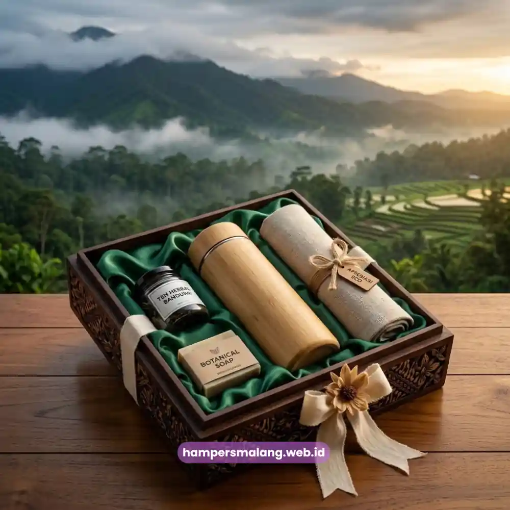

Paket hampers ramah lingkungan untuk apresiasi karyawan di Bandung umumnya menggunakan material bambu, kertas daur ulang, dan kanvas.
Produk-produk ini dikemas dalam packaging yang menonjolkan nilai keberlanjutan perusahaan.
Perusahaan di Bandung, termasuk yang berada di ekosistem startup kreatif kota ini, semakin banyak yang ingin menunjukkan kepedulian terhadap lingkungan.
Kepedulian ini ditunjukkan lewat program apresiasi karyawan, bukan sekadar mencantumkannya sebagai program CSR di atas kertas.
Salah satu cara yang paling terlihat nyata adalah memilih hampers dengan material dan packaging ramah lingkungan.
Material Ramah Lingkungan yang Paling Diminati
Material ramah lingkungan yang paling diminati untuk hampers kantor di Bandung adalah bambu, kertas daur ulang, dan kanvas.
Bahan ini dipilih karena tahan lama, mudah didaur ulang kembali, dan tetap terlihat premium saat diterima karyawan.
Bambu umumnya digunakan pada tumbler, alat makan, atau aksesori kerja karena tekstur alami dan daya tahannya.
Kertas daur ulang dipakai untuk notebook, kemasan, atau kartu ucapan dalam paket hampers.
Kanvas digunakan pada tote bag sebagai pengganti kantong plastik sekali pakai.
Ketiga material ini juga relatif mudah dipersonalisasi dengan grafir atau cetak logo perusahaan tanpa mengurangi kesan alami dari materialnya.
Baca Juga: Ide Souvenir Teknologi Kantor yang Bikin Karyawan Betah Pakai
Contoh Isi Paket Hampers Berkelanjutan
Contoh isi paket hampers berkelanjutan untuk karyawan biasanya terdiri dari kombinasi tumbler bambu, tote bag kanvas, notebook kertas daur ulang, dan satu item pelengkap bertema apresiasi.
Kombinasi ini dapat disusun sesuai kebutuhan acara, misalnya perayaan ulang tahun perusahaan.
Atau penghargaan akhir tahun, serta apresiasi pencapaian target kerja bagi karyawan.
Item pelengkap bisa berupa camilan sehat dalam kemasan ramah lingkungan.
Atau kartu ucapan yang dicetak menggunakan kertas daur ulang, sehingga keseluruhan paket tetap konsisten dengan nilai keberlanjutan.

Cara Mengomunikasikan Nilai Sustainability lewat Packaging
Nilai sustainability dapat dikomunikasikan lewat packaging dengan memilih bahan kemasan yang juga ramah lingkungan.
Serta mencantumkan pesan singkat mengenai material yang digunakan pada hampers tersebut.
Packaging yang dirancang dari kertas daur ulang atau kain, dipadukan dengan label singkat yang menjelaskan asal material.
Hal ini membantu penerima memahami bahwa hampers tersebut memang dirancang dengan pertimbangan lingkungan, bukan sekadar klaim tanpa bukti.
Pendekatan ini juga memperkuat citra perusahaan sebagai organisasi yang konsisten menjalankan nilai keberlanjutan.
Khususnya di mata karyawan yang menerimanya secara langsung sebagai bentuk apresiasi atas dedikasi mereka.
Hampers Malang siap membantu perusahaan Anda merancang paket hampers ramah lingkungan yang sesuai dengan nilai-nilai keberlanjutan perusahaan Anda.
Hubungi kami hari ini untuk berdiskusi tentang bagaimana kami dapat membantu Anda mengapresiasi karyawan dengan cara yang lebih bermakna.
Tanya Jawab Seputar Hampers Ramah Lingkungan
Material ramah lingkungan yang paling diminati adalah bambu, kertas daur ulang, dan kanvas karena tahan lama, mudah didaur ulang kembali, dan tetap terlihat premium.
Kombinasi tumbler bambu, tote bag kanvas, notebook kertas daur ulang, dan satu item pelengkap bertema apresiasi seperti camilan sehat sangat ideal.
Karena packaging yang ramah lingkungan dengan pesan singkat menjelaskan asal material dapat memperkuat citra perusahaan yang peduli lingkungan tanpa sekadar klaim.
Dengan memilih paket hampers ramah lingkungan, perusahaan tidak hanya memberikan apresiasi kepada karyawan, tetapi juga berkontribusi positif bagi lingkungan.
Hampers ramah lingkungan menjadi simbol nyata komitmen perusahaan terhadap keberlanjutan dan nilai-nilai peduli bumi.
Konsultasikan kebutuhan hampers apresiasi karyawan bersama Hampers Malang, mitra tepercaya untuk solusi corporate gifting berkelanjutan di Bandung dan sekitarnya.

Butuh Hampers Ramah Lingkungan?
Konsultasikan kebutuhan Anda bersama tim kami.
Ditulis oleh Tim Maroon Souvenir
Ahli dalam perancangan hampers dan corporate gift untuk perusahaan. Membantu klien memberikan kesan mendalam melalui hadiah berkualitas.